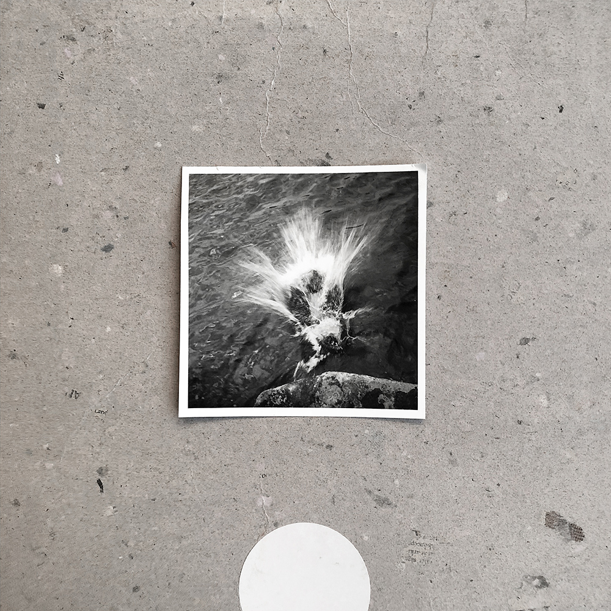
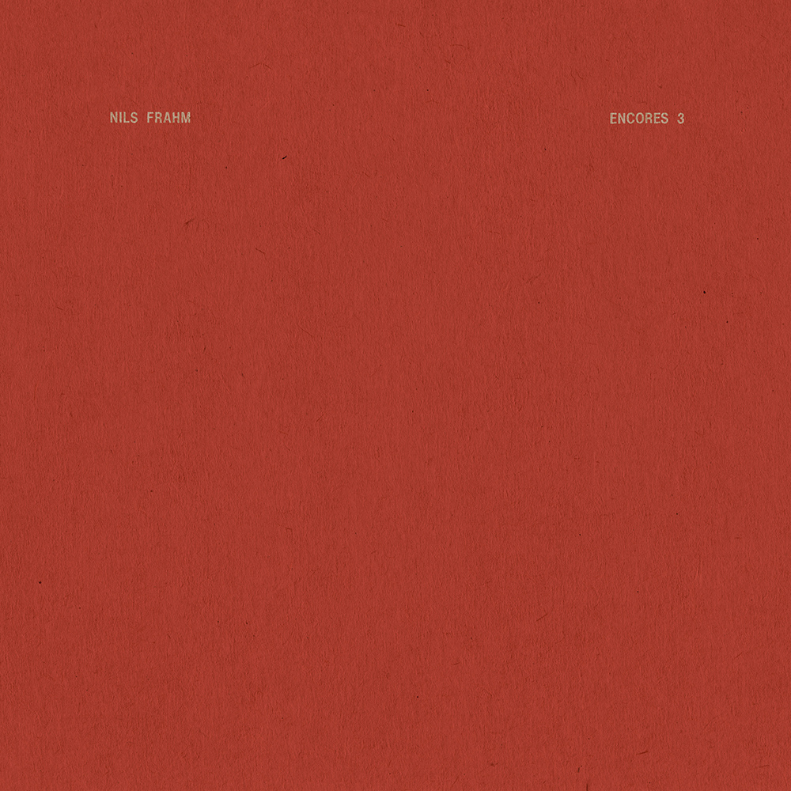

Finding simplicity in life

July 23,2019 | 3 comments
Life can get complicated really quickly, but it doesn't have to be! There are many ways to simplify your life, a few of which we've explored in the past.This week we're taking a bit of approach though, in how you can find simplicity in the life you already living.
CONTINUE READING
Keeping cooking simple
Food is a very important part of everyone's life.
If you want to be healthy, you have to eat healthy. One of the easises ways
to do that is keep your cooking nice and simple.
CONTINUE READING
july 19, 2019 | 3 comments
Simplicty and Work
Food is a very important part of everyone's life.
If you want to be healthy, you have to eat healthy. One of the easises ways
to do that is keep your cooking nice and simple.
CONTINUE READING
july 14, 2019 | 3 comments
Simple Decorations
Food is a very important part of everyone's life.
If you want to be healthy, you have to eat healthy. One of the easises ways
to do that is keep your cooking nice and simple.
CONTINUE READING

july 12, 2019 | 3 comments